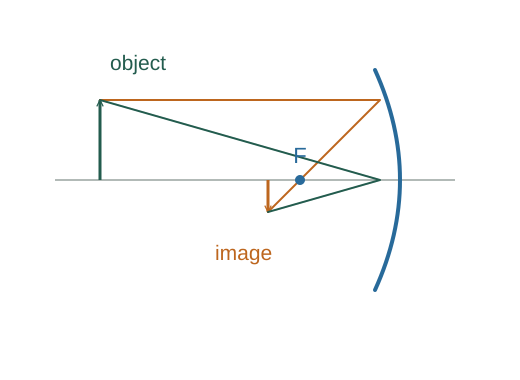

Derive the paraxial spherical-mirror equation
A spherical mirror approximately focuses rays close to its axis. The factor one half comes from the law of reflection, which doubles the small angular deflection relative to the normal.
What the symbols mean
R: signed curvature radius; f: signed focal length; do, di: real-object/real-image positive distances. A concave mirror has positive R and f here.
When this applies
Paraxial reflection at a spherical mirror, small ray heights compared with |R|, and a consistent mirror sign convention.

Relate surface normal to curvature
At height h near the axis, the surface normal points toward the centre of curvature. Its small angle to the axis is approximately h/R.
Reflect a parallel incident ray
The law of reflection gives equal incident and reflected angles about the normal, so the reflected ray turns through approximately 2α relative to the reversed axial direction.
Allow a finite-distance object
For a paraxial ray at height h, the small object-side and image-side angles are approximately h/do and h/di. The reflection geometry makes their sum 2α.
Cancel ray height
Divide by h and replace 2/R by 1/f. The resulting mirror equation predicts real and virtual images using signed distances.
Where each equation comes from
Derived equations link to an argument below. Definitions, physical postulates and constitutive models are identified as the inputs of that argument.
Derivation of the main resultDerived result
Conditions: Paraxial reflection at a spherical mirror, small ray heights compared with |R|, and a consistent mirror sign convention.
- Relate surface normal to curvature. At height h near the axis, the surface normal points toward the centre of curvature. Its small angle to the axis is approximately h/R. Explain the equation used in step 1 ↗
- Reflect a parallel incident ray. The law of reflection gives equal incident and reflected angles about the normal, so the reflected ray turns through approximately 2α relative to the reversed axial direction. Explain the equation used in step 2 ↗
- Allow a finite-distance object. For a paraxial ray at height h, the small object-side and image-side angles are approximately h/do and h/di. The reflection geometry makes their sum 2α. Explain the equation used in step 3 ↗
- Cancel ray height. Divide by h and replace 2/R by 1/f. The resulting mirror equation predicts real and virtual images using signed distances. Explain the equation used in step 4 ↗
Equation in step 1Derived result
What is being shown: Relate surface normal to curvature
At height h near the axis, the surface normal points toward the centre of curvature. Its small angle to the axis is approximately h/R.
Starting conditions and inputs: Paraxial reflection at a spherical mirror, small ray heights compared with |R|, and a consistent mirror sign convention.
Equation in step 2Derived result
What is being shown: Reflect a parallel incident ray
The law of reflection gives equal incident and reflected angles about the normal, so the reflected ray turns through approximately 2α relative to the reversed axial direction.
Earlier results used in this argument:
- α ≈ h/R (Derived result)
Equation in step 3Derived result
What is being shown: Allow a finite-distance object
For a paraxial ray at height h, the small object-side and image-side angles are approximately h/do and h/di. The reflection geometry makes their sum 2α.
Earlier results used in this argument:
- α ≈ h/R (Derived result)
- h/f ≈ 2α ≈ 2h/R ⇒ f ≈ R/2 (Derived result)
Equation in step 4Derived result
What is being shown: Cancel ray height
Divide by h and replace 2/R by 1/f. The resulting mirror equation predicts real and virtual images using signed distances.
Earlier results used in this argument:
- α ≈ h/R (Derived result)
- h/f ≈ 2α ≈ 2h/R ⇒ f ≈ R/2 (Derived result)
- h/do + h/di ≈ 2h/R (Derived result)
A worked example
A concave mirror with R = 40 cm has f = 20 cm. An object at 60 cm forms a real image at 30 cm.
Derivation behind this calculation ↗A point to keep straight
A spherical mirror does not focus all parallel rays at exactly one point. The R/2 focal relation is paraxial; large ray heights produce spherical aberration.
Check the assumptions and derivation ↗